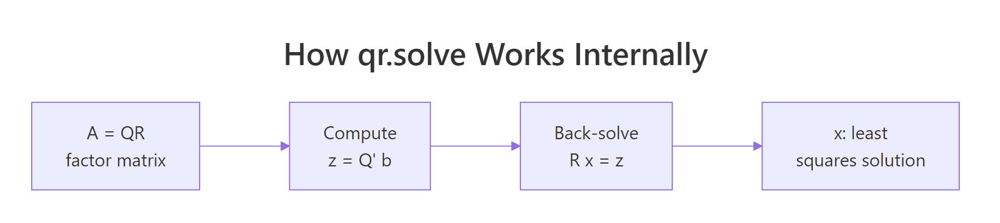
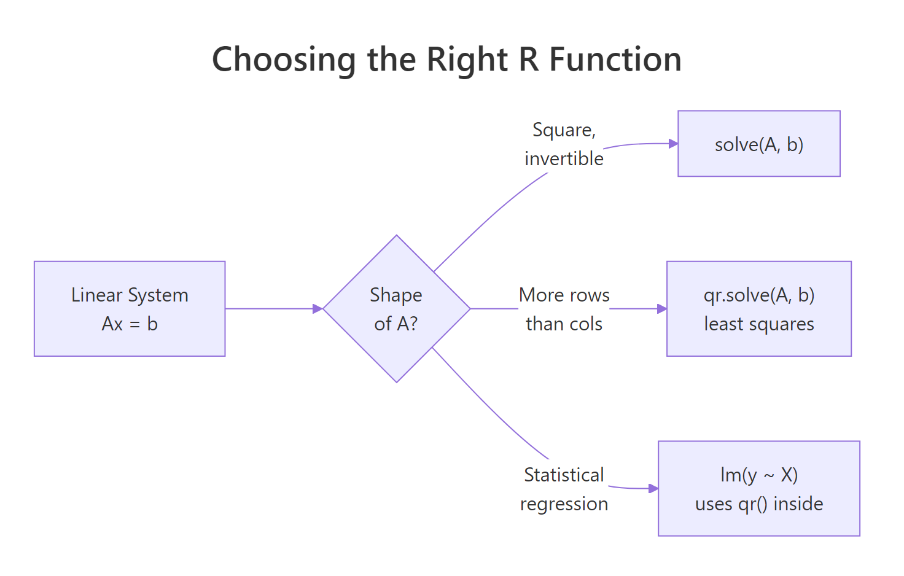

Solving Linear Systems in R: solve(), qr() & Least Squares Solutions
Solving linear systems in R means finding the vector x that satisfies Ax = b. For a square invertible matrix, call solve(A, b). For a tall (overdetermined) matrix, call qr.solve(A, b) and you get the least squares solution that minimises the residual error. Both functions live in base R, no packages needed.
How do you solve Ax = b in R when A is square?
Three equations, three unknowns. That is the most common shape of a linear system, and R can solve it in one line. We will set up the coefficient matrix A1, the right-hand side b1, and let solve() return the answer.
solve(A1, b1) returned the unique vector x1 = c(6, 15, -23) that satisfies all three equations at once. The verification step A1 %*% x1 recovers the original right-hand side, confirming the answer to machine precision. R's solve() calls a LAPACK routine under the hood, so this scales comfortably to systems with thousands of unknowns.
solve(A) %*% b works but does extra work and loses precision. solve(A, b) performs an LU decomposition once and back-substitutes, which is faster and numerically tighter. Use solve(A) only when you genuinely need the inverse matrix.Try it: Solve the 2-equation system 2x + y = 5 and x - y = 1. Save the solution to ex_x.
Click to reveal solution
Explanation: solve() accepts both the coefficient matrix and the right-hand side. It returns x = (2, 1), which satisfies both equations: 2(2) + 1 = 5 and 2 - 1 = 1.
What goes wrong when A is singular or ill-conditioned?
Not every system has a unique solution. If the rows of A are linearly dependent (one row is a combination of others), the matrix is singular and solve() will throw an error. A more subtle problem is ill-conditioning: the matrix is technically invertible, but the solution amplifies tiny numerical errors into huge swings.
Let's first see what a singular matrix looks like to R.
R refuses to return a solution because there are infinitely many vectors that satisfy the system. The error message includes the reciprocal condition number, which is essentially zero here. That number tells you how close to singular you are even when no error is raised.
For a quantitative health check, use kappa(). It returns the condition number of A: the ratio of its largest to smallest singular value. Small numbers (close to 1) are great; numbers near 1e16 mean any answer you compute is mostly noise.
A1 has condition number around 7, so a 1% error in b produces about a 7% error in x. The 5×5 Hilbert matrix has condition number nearly 500,000: a tiny rounding error in the input gets magnified roughly half a million times in the solution. You can still call solve() on it, but trust the answer cautiously.
solve() only fail on truly singular matrices. If kappa() exceeds about 1e10, treat any solution as suspect and prefer methods that avoid forming A'A (covered in the QR section below).Try it: Compute the condition number of ex_M1 (a Vandermonde-like matrix) and ex_M2 (an identity-perturbed matrix). Decide which is safer for solving Ax = b.
Click to reveal solution
Explanation: Vandermonde matrices grow ill-conditioned quickly because their columns become near-parallel. ex_M2 is essentially the identity, so it is nearly perfectly conditioned.
How do you solve overdetermined systems with least squares?
In real data, you almost never have a square system. You have many measurements (rows) and few parameters (columns), so A is tall: more equations than unknowns. There is usually no x that satisfies every equation exactly. The next best answer is the vector that comes closest, where "closest" means minimising the squared error.
Formally, the least squares problem is:
$$\hat{x} = \arg\min_x \|Ax - b\|_2^2$$
Where:
- $A$ = an $m \times n$ matrix with $m > n$
- $b$ = a length-$m$ vector of observations
- $\hat{x}$ = the length-$n$ vector that makes
Axas close tobas possible
qr.solve() returns this $\hat{x}$ in one call. It uses QR decomposition internally, which is the same algorithm lm() uses for regression.
The fit is not perfect, and that is the point: with 5 equations and 3 unknowns, we cannot satisfy all of them. qr.solve() returned the x2 that minimises the sum of squared residuals. The residual vector shows how far each equation misses, and you can confirm sum(resid^2) is the smallest achievable for this system.
qr.solve(A, b) and solve(qr(A), b) return the same thing. The first form is a convenience wrapper. Use whichever reads cleaner. If you also want the Q and R factors themselves (for example, to reuse them on multiple right-hand sides), call qr_obj <- qr(A) once and reuse qr_obj.Try it: Fit a least squares solution to a 4×2 system. The first column of ex_A is all 1s (intercept), the second column is 1, 2, 3, 4. Treat ex_b as observed y-values.
Click to reveal solution
Explanation: This is exactly simple linear regression with intercept 0.05 and slope 1.94. qr.solve performs the same calculation lm(ex_b ~ ex_A[, 2]) would, but skips formula parsing.
Why is QR decomposition more stable than the normal equations?
The textbook formula for least squares is the normal equations:
$$\hat{x} = (A^\top A)^{-1} A^\top b$$
It is mathematically correct and tempting to translate directly into R as solve(t(A) %*% A, t(A) %*% b). Don't. Forming A'A squares the condition number of A, so any ill-conditioning in the original problem becomes catastrophic.
QR decomposition takes a different route. It factors $A = QR$ where $Q$ is orthogonal and $R$ is upper triangular, then solves $Rx = Q^\top b$ by back substitution. No A'A ever appears. Figure 2 shows the pipeline.

Figure 2: How qr.solve factors A then back-solves a triangular system.
Let's compare both methods on a deliberately ill-conditioned design matrix and see how badly the normal equations fail.
Same problem, same data, but the normal equations give an error around 0.15, while qr.solve is accurate to roughly eight decimal places. The Hilbert matrix has condition number near 1e10, and squaring it pushes H'H past the limits of double-precision arithmetic. QR sidesteps that by working with $A$ directly.
solve(t(X) %*% X, t(X) %*% y), replace it with qr.solve(X, y) for free accuracy.Try it: Reuse the Hilbert matrix H defined above. Set the ground truth to (1, 2, 3, 4, 5, 6, 7, 8) and compare the two methods' errors.
Click to reveal solution
Explanation: The error pattern repeats: normal equations lose about 7-8 digits of precision, while qr.solve stays close to full double precision.
How does lm() use QR under the hood?
If you have ever wondered what lm() actually does, the short answer is: it builds the design matrix, calls qr() on it, and pulls coefficients out with qr.coef(). You can replicate the entire fitting step manually and get bit-identical coefficients. Doing this once makes regression feel a lot less mysterious.
We will regress mpg on wt and hp from the built-in mtcars dataset, first the manual way, then with lm().
Identical coefficients, down to every decimal printed. lm() adds many conveniences, like factor handling, NA filtering, and inference-ready output, but the numerical core is the QR call you just performed by hand. The intercept is 37.23, the wt coefficient is -3.88 (each extra 1000 lbs costs you about 3.9 mpg), and the hp coefficient is -0.032 (each extra horsepower costs about 0.03 mpg).
summary(), predict(), and anova(). Manual qr.coef() is great for understanding and for inner loops in custom estimators, but for everyday regression lm() is the right tool.Try it: Manually compute regression coefficients for qsec ~ wt + disp from mtcars using qr.coef(), then verify against lm().
Click to reveal solution
Explanation: Both routes produce the same coefficients because lm() calls qr() and qr.coef() internally.
Practice Exercises
These capstone exercises combine multiple concepts from the tutorial. Variables use a cap_ prefix to keep them separate from the examples above.
Exercise 1: Solve and verify a 4-equation system
Build the system below as cap_A and cap_b, solve it, then check that cap_A %*% cap_x recovers cap_b to within 1e-10.
3a + b - 2c + d = 7
a + 4b + c - 2d = 1
2a - b + 3c + d = 4
a + 2b - c + 5d = 9Click to reveal solution
Explanation: solve(cap_A, cap_b) does a single LU decomposition. The maximum residual is at the level of machine epsilon, confirming the answer.
Exercise 2: Compare normal equations vs qr.solve on a 6×3 problem
Generate a 6×3 design matrix cap_A2 whose columns are highly correlated, plus a response cap_b2. Solve the system both ways and compute the residual sum of squares for each. Explain which method gives a smaller RSS and why the difference is small here.
Click to reveal solution
Explanation: Both methods minimise the same objective, so when both succeed the RSS values agree. The difference between methods is the coefficients themselves, which can swing wildly under the normal equations if conditioning is bad. With 6 rows and only mild collinearity, both stay accurate. Push collinearity higher (replace 0.001 with 1e-12) and the normal equations diverge.
Exercise 3: Manual regression of qsec on wt and disp
Without using lm(), compute the regression coefficients for qsec ~ wt + disp from mtcars. Use model.matrix() to build cap_X, then qr.coef(). Report the residual standard error too.
Click to reveal solution
Explanation: qr.coef() matches lm() exactly. Residual standard error is the square root of the residual sum of squares divided by n - p degrees of freedom.
Complete Example
Now we put everything together in one workflow. We will fit mpg ~ wt + hp + cyl from mtcars, solve the normal least-squares problem with qr.solve(), compute fitted values, residuals, and R², then verify against lm().
The hand-computed R² of 0.843 matches lm() exactly, and so do all four coefficients. You now have the complete linear-regression machinery sitting on top of two base-R primitives: model.matrix() to build X, and qr.solve() to solve the system.

Figure 1: Pick the right R function based on the shape of A.
Summary
| Situation | R function | Notes |
|---|---|---|
| Square invertible A | solve(A, b) |
LU decomposition; fails on singular A |
| Need A inverse explicitly | solve(A) |
Avoid when you only need A^-1 %*% b |
| Tall (overdetermined) A | qr.solve(A, b) |
Least squares; numerically stable |
| Reusing the same A | qr_obj <- qr(A); qr.solve(qr_obj, b) |
Factor once, solve many |
| Statistical regression | lm(y ~ X) |
Wraps qr() with diagnostics |
| Detect ill-conditioning | kappa(A, exact = TRUE) |
Bigger than 1e10 = trouble |
Three numerical rules to remember:
- Pass
btosolve(), never invert A first. - For overdetermined systems use
qr.solve(), never the normal equations. - Check
kappa()whenever results look strange.
References
- R Core Team. solve() reference. stat.ethz.ch/R-manual
- R Core Team. qr() and qr.solve() reference. stat.ethz.ch/R-manual
- Trefethen, L. N., & Bau, D. (1997). Numerical Linear Algebra. SIAM. Lectures 7, 11, 18, 19.
- Golub, G. H., & Van Loan, C. F. (2013). Matrix Computations (4th ed.). Johns Hopkins. Chapter 5.
- Bates, D. Comparing Least Squares Calculations. Matrix package vignette. cran.r-project.org/web/packages/Matrix
- Wickham, H. (2019). Advanced R (2nd ed.). CRC Press. adv-r.hadley.nz
- James, G., Witten, D., Hastie, T., & Tibshirani, R. (2021). An Introduction to Statistical Learning. Springer. Chapter 3.
- Higham, N. J. (2002). Accuracy and Stability of Numerical Algorithms (2nd ed.). SIAM. Chapter 18 (linear least squares).
Continue Learning
- Matrix Operations in R, the prerequisites: building matrices, multiplication, inversion, and rank.
- Eigenvalues & Eigenvectors in R, the next step in the linear algebra sequence (sibling 2.9.3).
- Linear Regression in R, apply
qr.solve()thinking to the full statistical workflow.